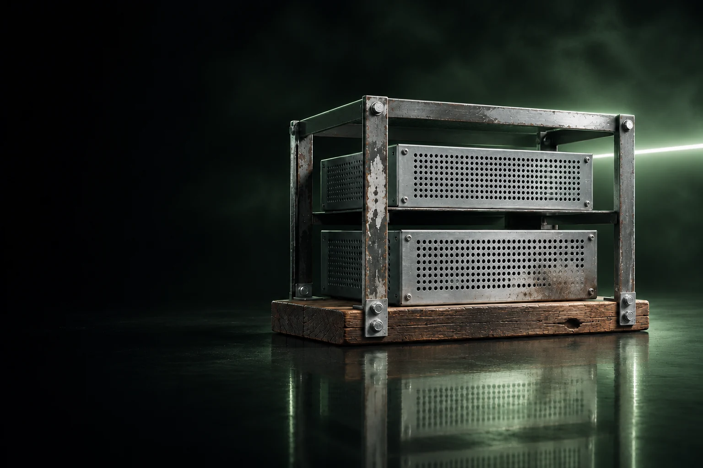

归塑 · 循环设计阶段原型产品概念渲染
THE REFORM LOOP
四个环节，一份可追溯档案。
从材料护照到制作记录，每一环都将信息交给下一环。

DEMO CASE
缺两枚螺栓，方案会怎么变？
两套预设方案读取同一批示例库存。补料或改选方案，查看差额如何写入案例档案。

THE REFORM LOOP
从材料护照到制作记录，每一环都将信息交给下一环。
DEMO CASE
两套预设方案读取同一批示例库存。补料或改选方案，查看差额如何写入案例档案。